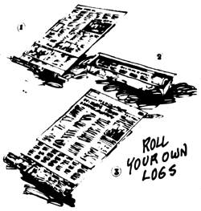
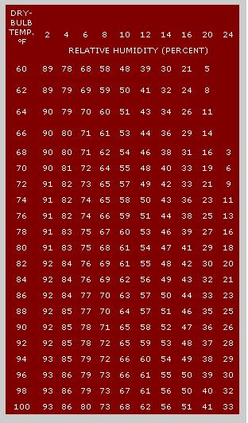
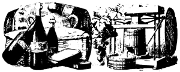
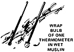
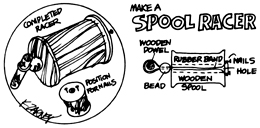

............................ it tells you how
Here are a few more of THE Mother Earth News (restricted) syndicated features which have appeared in 100 + newspapers over the past four and a half years.
A number of companies now market machines designed to help you roll your family's old newspapers into "logs" that can be burned in a fireplace or stove. After testing a couple of these devices, I think the idea is a good one for two reasons: > [1] it puts recycling on a real grassroots basis by allowing you to directly convert part of your waste into something useful and [2] it gives you a small, partial answer to today's fuel shortage.
There's no need to shell out good dollars for a "log rolling" machine to realize these benefits, however. Just get yourself a length of old broomstick and start tightly rolling one section of a sheet of newspaper after another around it as shown in Fig. 1. When the "log" is about two inches thick, slip the broomstick out, tie the bundle with light wire, and soak the paper in one pint of charcoal lighter or kerosene ( never gasoline). If you have no other soaking tray, you can make one that will last for years from a sheet of heavy-duty aluminum foil (Fig. 2)
Once the rolled paper has soaked up the fluid, wrap more waste newsprint around the saturated core . . . enough to make a log about four to five inches thick. Tie the bundle with light wire and set it aside. Three of these logs will burn all evening in a fireplace.
The relationship between the maximum amount of moisture that the air can hold and the amount of moisture that it actually does contain is called relative humidity. (And we all know-or should know-that the moisture in the atmosphere during the summer makes us swelter quite as much as the heat in the air, just as lack of humidity during the winter can make a room feel much colder than it actually is.)
To measure relative humidity, obtain two identical thermometers and completely wrap the bulb on one with a small square of wet muslin. Tie the soaked fabric on with thread and place both thermometers in the breeze from a fan. Check the instruments after one to two minutes, note the reading of each (the wet-bulb thermometer will register somewhat lower than the dry) and compute the relative humidity on the chart below.
HOW TO
DETERMINE
RELATIVE
HUMIDITY
Here's another old-limey toy that will help keep the young' uns occupied while you finish the chores.
The hardest item to find these days while gathering materials for your racer is a large wooden spool . . . plastic just doesn't make it! You'll also need a 1/4-inch dowel three inches long, a large bead (bigger than the spool's hotel, a strong 4-inch rubber band and two small nails.
Turn the spool on end and drive the two nails into the wood on opposite sides of the spool's hole . . . leaving enough of each nail exposed to hold the rubber band. Wrap the band around the nails, thread it through the spool and bead, and slip the dowel through the protruding loop. Now you're ready to race.
Wind the rubber-band motor, place the toy on a smooth surface and watch it go!
Sometimes the simple, "primitive" ways can be very good ways indeed. The Indians of Colombia, for instance, use a baby carrier-called a ruana-that's nothing but a coarsely woven rectangle of cloth slit halfway up the center. The carrier holds a child comfortably and securely yet leaves its mother's hands free . . . without the aid of a single safety pin, button, or snap!
|
 |
 |
 |
|
 |
 |
|